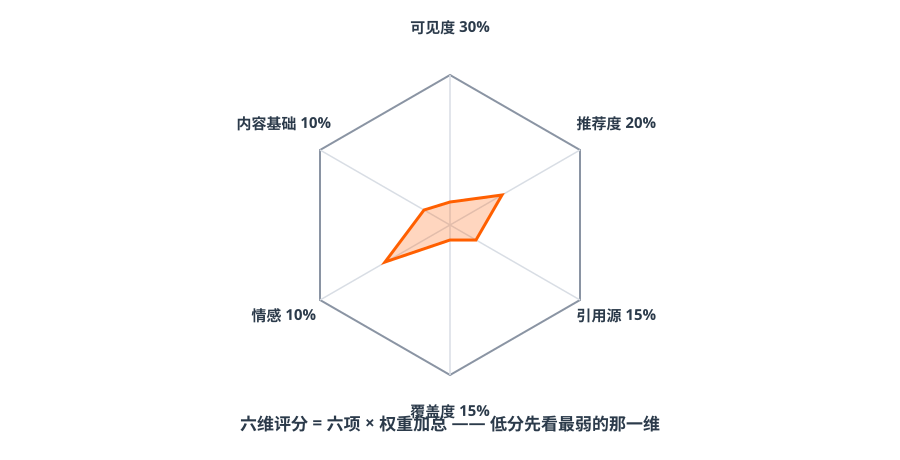
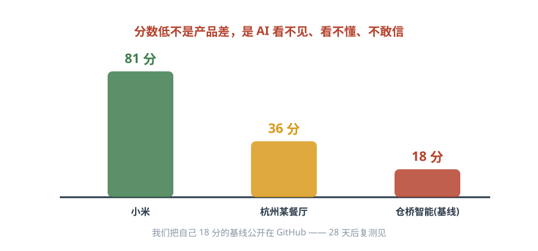

第二篇 诊断｜先给品牌打个分¶
一句话总结：不用猜自己行不行——用诊断工具打个分。分数低不是产品差，是 AI 看不见、看不懂、不敢信。
2.1 六维评分模型¶
小剧场 · 17 分
小林用诊断工具给自家厂跑了一遍，综合分 17，D 级。 老周盯着雷达图：「可见度 0？我们官网不是有吗？」 小林：「官网是一张图片，AI 读不到字。百科没有，公众号去年就停更了，AI 引用的三篇资料里，两篇是同行的。」 老周沉默了一会儿：「那先补哪个？」——这就是本篇要回答的问题。
用固定问题集在多个 AI 引擎逐条实测，输出六维得分（工具已开源：skills/S1-diagnosis）：

图解｜六维雷达：六项得分 × 权重加总 = 综合分；低分先看最弱的那一维| 维度 | 权重 | 看什么 | 老板白话 |
|---|---|---|---|
| 可见度 | 30% | 品牌在答案里出现了吗？位置靠前吗？ | 有没有上牌桌 |
| 推荐度 | 20% | AI 是明确推荐你，还是客观带过？ | 是主角还是背景板 |
| 引用源质量 | 15% | AI 引用官网/权威媒体，还是低质聚合站？ | 引的是你家的话吗 |
| 信息覆盖度 | 15% | 价格、地址、资质、案例说得全吗？ | AI 对你了解多深 |
| 情感倾向 | 10% | 描述是正面、中立还是负面？ | 说你好话还是坏话 |
| 内容基础 | 10% | 官网、百科、第三方报道、知识图谱有没有？ | 地基打了没有 |
2.2 三份真实报告：差距是可以量化的¶

图解｜同一套题：小米 81 分（领先者）· 杭州某正念餐厅 36 分（较弱）· 仓桥智能自己 18 分（基线公开中）- 81 分的小米：全网信息一致、证据充分——AI 闭着眼推荐；
- 36 分的某餐厅：公众号内容不错，但没官网、没百科、和三家外地店重名——AI 想推荐都不敢认；
分数生效门槛（先说丑话）
官网 + 认证公众号是两块地基。地基不补齐，后面发再多内容，复测分数也不会动。 这是所有低分品牌的第一处方，没有例外。
2.3 报告怎么读：P0 / P1 / P2¶
- P0（1~2 周必做）：可检索官网、百科词条+品牌消歧——分数生效门槛；
- P1（1~2 个月）：权威媒体报道、口碑资产、对比型内容；
- P2（持续）：信息维度补齐（价格/资质/FAQ）、月度监测。
2.4 自己动手：每周 30 分钟自测法¶
实操：建立你的 20 问题集
品类推荐 10 问：[城市]+[品类]哪家好 / [品类]怎么选 / [场景]有什么推荐 / [人群]适合的[品类] / [品类]排行榜 / [痛点]怎么解决 / [品类]多少钱 / [品类]避坑指南 / [细分场景]推荐 / 附近的[品类]
品牌直达 5 问：[品牌]怎么样 / [品牌]口碑 / [品牌]地址 / [品牌]价格 / [品牌]和谁合作过
对比验证 5 问：[品牌]和[竞品]哪个好 / [品牌]值得选吗 / [品牌]优势 / [品牌]是正规公司吗 / [品牌]售后怎么样
每周三固定时间，在豆包/元宝/DeepSeek 各问一遍，每问记录四项：是否提及｜是否推荐｜引用了谁｜说得对不对。四周下来，趋势自现。
章末自测（2 题）
- 六个维度里权重最高的是哪个？为什么它排第一？
- 一家企业诊断 36 分，公众号内容很好，但没官网、没百科——它的 P0 是什么？
参考答案
1 可见度（30%）——先有出现，才谈推荐、引用、准确；没被看见，后面全是零。2 官网 + 百科词条（品牌消歧）——这是分数生效门槛，地基不补，内容再好复测也不动。
✅ 行动检查¶
- [ ] 领取/生成了自己品牌的基线诊断（哪怕先用 20 问手测）；
- [ ] 找出了最弱的一维，写下了自己的 P0 三件事；
- [ ] 在日历上设了每周三的 30 分钟复测提醒。